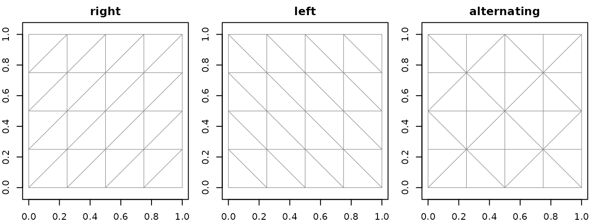
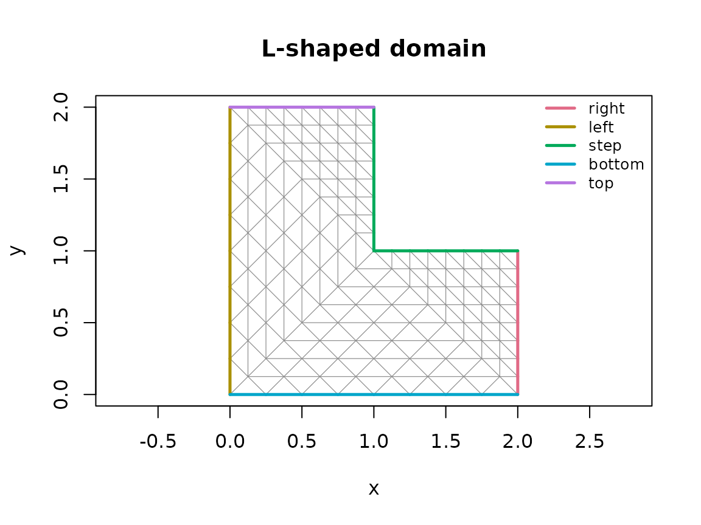
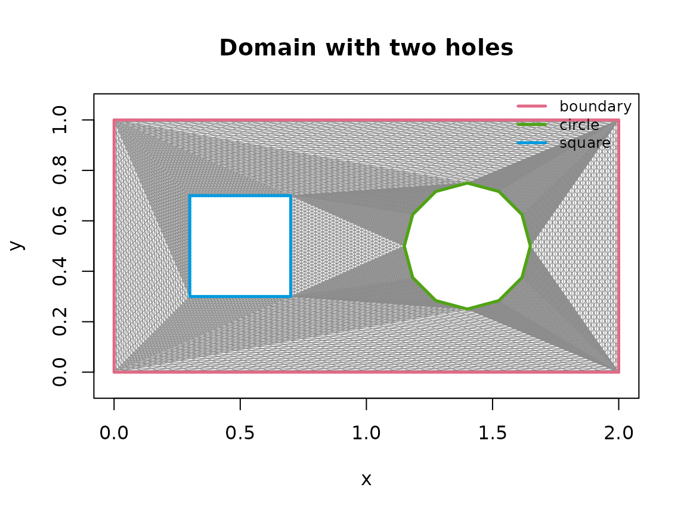
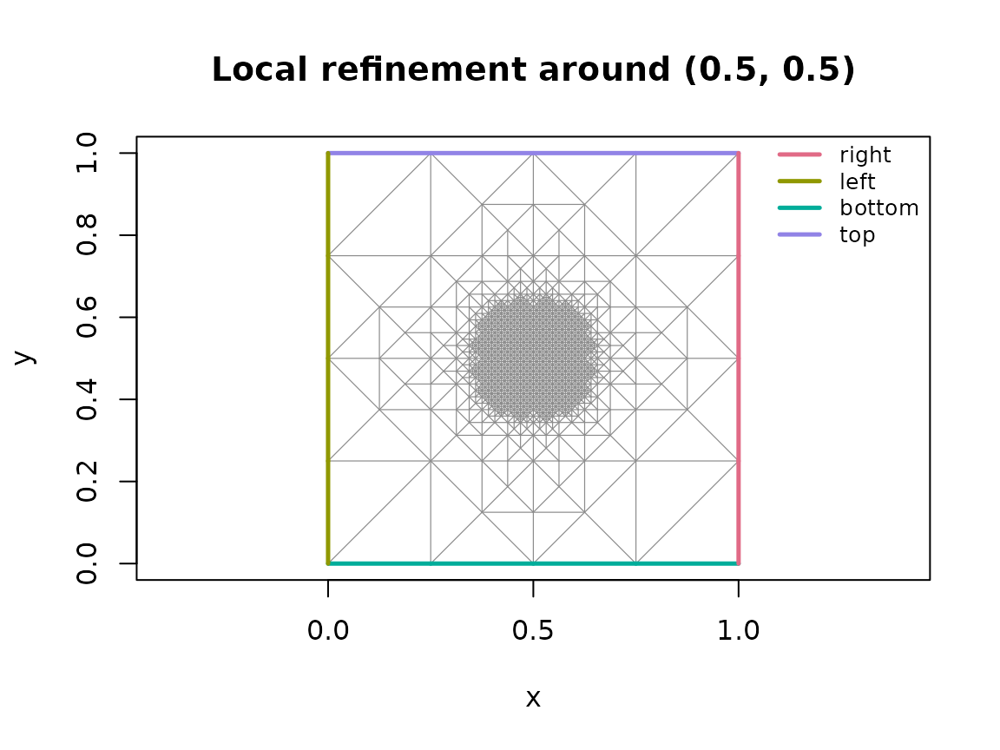

The mesh is the foundation of every finite-element computation. pdecompR represents two-dimensional triangular meshes with explicit topology and named boundary regions, and it validates every mesh it builds.
Domains
A domain is a pure geometric description. Rectangles have four named sides; polygons name each side individually.
pde_domain("rectangle", x = c(0, 2), y = c(0, 1))
#> <pde_domain> rectangle
#> (0, 2) x (0, 1)
#> markers: bottom, right, top, left
L <- rbind(c(0, 0), c(2, 0), c(2, 1), c(1, 1), c(1, 2), c(0, 2))
dom <- pde_domain("polygon", vertices = L,
markers = c("bottom", "right", "step", "step", "top", "left"))
dom
#> <pde_domain> polygon
#> vertices: 6
#> markers: bottom, right, step, top, leftValidation rejects degenerate geometry: repeated vertices, zero-length sides, zero area and self-intersecting boundaries. Clockwise polygons are reordered (their markers follow) and a message says so.
Structured meshes
pde_mesh_rectangle() generates structured meshes with
three diagonal patterns. Corner nodes belong to both adjacent sides.
op <- par(mfrow = c(1, 3), mar = c(2, 2, 2, 1))
for (p in c("right", "left", "alternating")) {
plot(pde_mesh_rectangle(nx = 4, pattern = p), main = p, markers = FALSE)
}
par(op)The mesh object
A pde_mesh stores
-
nodes: an n \times 2 matrix of coordinates; -
triangles: an m \times 3 integer matrix, counterclockwise; -
edges: the unique edges, andelement_edgesmapping each triangle’s local edges (v_1, v_2), (v_2, v_3), (v_3, v_1) to global edges; -
edge_elements: the one or two triangles sharing each edge; -
boundary: a data frame of boundary edges with nodesn1,n2(oriented with the domain on the left), the global edge, the parent element, the local edge and the marker.
mesh <- pde_mesh_rectangle(nx = 2)
head(mesh$triangles)
#> [,1] [,2] [,3]
#> [1,] 1 2 5
#> [2,] 2 3 6
#> [3,] 4 5 8
#> [4,] 5 6 9
#> [5,] 1 5 4
#> [6,] 2 6 5
mesh$boundary
#> n1 n2 edge element local marker
#> 1 1 2 1 1 1 bottom
#> 2 2 3 2 2 1 bottom
#> 3 3 6 10 2 2 right
#> 4 6 9 12 4 2 right
#> 5 8 7 13 7 2 top
#> 6 9 8 14 8 2 top
#> 7 4 1 15 5 3 left
#> 8 7 4 16 7 3 leftValidation
pde_mesh() builds a mesh from raw coordinates and
connectivity and checks it thoroughly. It rejects invalid node indices,
repeated nodes in an element, duplicate elements, zero-area triangles,
unused nodes, edges shared by more than two triangles, neighboring
elements that overlap across a shared edge, boundary definitions that do
not match the topological boundary, and elements that overlap without
sharing an edge. The last check uses two facts about a valid
triangulation: the corner angles around an interior node sum to 2\pi (at most 2\pi at a boundary node), and boundary edges
without a common node never touch. Clockwise elements are an error
unless reorientation is requested explicitly.
P <- rbind(c(0, 0), c(1, 0), c(1, 1), c(0, 1))
pde_mesh(P, rbind(c(1, 3, 2), c(1, 3, 4)))
#> Error:
#> ! 1 element(s) are clockwise (first: 1). Use `fix_orientation = TRUE` to reorder them.
m <- pde_mesh(P, rbind(c(1, 3, 2), c(1, 3, 4)), fix_orientation = TRUE)
m$info$reoriented
#> [1] 1
pde_mesh(rbind(c(0, 0), c(1, 0), c(2, 0)), rbind(c(1, 2, 3)))
#> Error:
#> ! Element 1 has zero area (degenerate triangle).
# two squares with their own nodes, overlapping in a quarter
P2 <- rbind(P, P + 0.5)
pde_mesh(P2, rbind(c(1, 2, 3), c(1, 3, 4), c(5, 6, 7), c(5, 7, 8)))
#> Error:
#> ! Boundary edges (3, 4) and (8, 5) intersect: elements overlap.Boundary markers can be supplied as an explicit list of boundary edges; every topological boundary edge must appear exactly once.
Geometry and quality
mesh_quality() returns, per element, the area, longest
and shortest edges, minimum and maximum angles and the shape ratio 2r/R (inradius over circumradius; 1 for
equilateral triangles).
summary(pde_mesh_rectangle(nx = 8))
#> Triangular mesh summary
#> nodes 81 elements 128 edges 208 boundary edges 32
#> total area 1
#> edge length: min 0.125 max 0.1768
#> angles (deg): min 45 max 90
#> shape ratio 2r/R: min 0.8284 median 0.8284 max 0.8284
#> boundary edges by marker:
#> bottom: 8
#> left: 8
#> right: 8
#> top: 8
head(mesh_quality(pde_mesh_rectangle(nx = 8)))
#> area h_max h_min min_angle max_angle shape_ratio
#> 1 0.0078125 0.1767767 0.125 45 90 0.8284271
#> 2 0.0078125 0.1767767 0.125 45 90 0.8284271
#> 3 0.0078125 0.1767767 0.125 45 90 0.8284271
#> 4 0.0078125 0.1767767 0.125 45 90 0.8284271
#> 5 0.0078125 0.1767767 0.125 45 90 0.8284271
#> 6 0.0078125 0.1767767 0.125 45 90 0.8284271Polygonal domains
pde_mesh_polygon() triangulates a simple polygon by ear
clipping, flips edges until the coarse triangulation is Delaunay, and
refines uniformly until the longest edge is at most h. Side
markers are kept.
mL <- pde_mesh_polygon(dom, h = 0.25)
summary(mL)
#> Triangular mesh summary
#> nodes 153 elements 256 edges 408 boundary edges 48
#> total area 3
#> edge length: min 0.125 max 0.25
#> angles (deg): min 45 max 90
#> shape ratio 2r/R: min 0.8284 median 0.8284 max 0.8284
#> boundary edges by marker:
#> bottom: 8
#> left: 8
#> right: 8
#> step: 16
#> top: 8
plot(mL, main = "L-shaped domain")
Polygons may have holes. Each hole is a simple polygon strictly
inside the outer one, and its sides get their own marker
("hole" by default). The mesher connects every hole to the
outer boundary by a bridge segment and triangulates the resulting single
polygon, so no external mesher is needed.
sq <- rbind(c(0, 0), c(2, 0), c(2, 1), c(0, 1))
holes <- list(rbind(c(0.3, 0.3), c(0.7, 0.3), c(0.7, 0.7), c(0.3, 0.7)),
cbind(1.4 + 0.25 * cos(seq(0, 2 * pi, length.out = 13)[-13]),
0.5 + 0.25 * sin(seq(0, 2 * pi, length.out = 13)[-13])))
dh <- pde_domain("polygon", vertices = sq, holes = holes, hole_markers = c("square", "circle"))
mh <- pde_mesh_polygon(dh, h = 0.1)
table(mh$boundary$marker)
#>
#> boundary circle square
#> 128 384 128
plot(mh, main = "Domain with two holes")
Holes that leave the outer polygon, overlap each other or touch a boundary are rejected when the domain is created.
This mesher has no external dependencies but does not guarantee
element quality for arbitrary polygons. For complex geometry, generate a
mesh with Gmsh and read it with
read_gmsh(); physical line groups become boundary
markers.
f <- system.file("extdata", "square.msh", package = "pdecompR")
gm <- read_gmsh(f)
#> Ignored 1 element(s) that are not triangles or lines.
table(gm$boundary$marker)
#>
#> bottom left right top
#> 2 2 2 2write_vtk() exports meshes and solutions to the VTK
format for ParaView: the legacy format by default, the XML
.vtu format when the file name ends in .vtu
(raw binary by default, exact to the last bit;
format = "ascii" for text). write_pvd() writes
a time-dependent solution as one .vtu file per output time
plus a .pvd collection that ParaView opens as an
animation.
Refinement
refine_uniform() splits each triangle into four similar
triangles. refine_mesh() refines selected elements by
newest vertex bisection and keeps the mesh conforming: no hanging nodes
appear, and the minimum angle stays bounded.
m <- pde_mesh_rectangle(nx = 4)
for (k in 1:5) {
P <- m$nodes; T <- m$triangles
cx <- (P[T[, 1], 1] + P[T[, 2], 1] + P[T[, 3], 1]) / 3
cy <- (P[T[, 1], 2] + P[T[, 2], 2] + P[T[, 3], 2]) / 3
m <- refine_mesh(m, which(sqrt((cx - 0.5)^2 + (cy - 0.5)^2) < 0.15))
}
plot(m, main = "Local refinement around (0.5, 0.5)")
min(mesh_quality(m)$min_angle)
#> [1] 45transfer_function() moves a function to another mesh by
evaluating it at the new degrees of freedom. Refined meshes are nested
in their parents, so P1 and P2 functions transfer exactly from coarse to
fine meshes. Refined meshes also record the parent edge of every new
node in info$new_nodes.
Selecting boundary parts
boundary_nodes() and boundary_dofs() select
nodes by marker. For imported meshes without physical groups,
set_boundary_marker() relabels boundary edges whose
midpoints satisfy a predicate.
m <- set_boundary_marker(pde_mesh_rectangle(nx = 8), "inlet",
function(x, y) x < 1e-12 & y > 0.25 & y < 0.75)
table(m$boundary$marker)
#>
#> bottom inlet left right top
#> 8 4 4 8 8